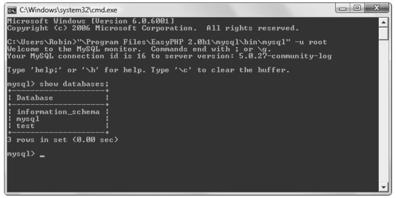
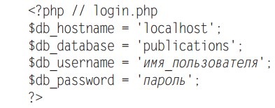

Урок 1. Введение в MySQL
Начало работы с интерфейсом командной строки
По умолчанию начальным для MySQL будет пользователь по имени root,
у которого не установлен пароль. Учитывая то, что это разработочный сервер,
доступ к которому можете получить только вы, мы не станем устанавливать
пароль.
Чтобы войти в интерфейс командной строки MySQL, следует выбрать команду
Пуск=>Выполнить(или использовать сочетание клавиш win+R) и в
окне запуска ввести команду CMD, после чего нажать клавишу
Enter. В результате будет вызвано командное окно Windows. Находясь
в этом окне, следует ввести следующую команду (в нашем случае мы используем
OSPanel, вам же следует уточнить путь к MySQL у преподавателя):
"С:\OSPanel\modules\database\MySQL-5.1\bin\mysql" -u root
Обратите внимание на кавычки, в которые заключены основной путь и имя файла.
Их присутствие обусловлено наличием пробелов, которые неправильно интерпретируются
командной строкой, а кавычки группируют составные части имени файла в единую строку,
понятную программе Command.
Эта команда предписывает MySQL зарегистрировать вас как пользователя root
без пароля. Теперь вы должны оказаться в среде MySQL и сможете приступить
к вводу команд. Чтобы убедиться в том, что все работает должным образом,
введите следующую команду, результат выполнения которой должен быть похож на
показанный на скриншоте ниже.
SHOW databases;

В перечне баз данных могут присутствовать и другие ранее созданные базы,
среди которых базы testможет и не оказаться.
Следует также понимать, что все находится под полным контролем системного
администратора, и вы можете столкнуться с некоторыми неожиданными настройками.
Например, может оказаться, что вам следует ставить перед именами всех создаваемых
вами баз данных уникальную идентификационную строку, обеспечивающую
их бесконфликтную работу с базами данных, созданными другими пользователями.
При возникновении любых проблем нужно переговорить с системным администратором,
который должен с ними разобраться. У него нужно запросить имя поль-зователя и пароль
и попросить дать вам возможность создавать новые базы данных
или как минимум попросить создать для вас хотя бы одну готовую к работе базу
данных. Тогда в этой базе можно будет создать все необходимые таблицы.
Доступ к MySQL с использованием PHP
Смысл использования PHP в качестве интерфейса к MySQL заключается в форматировании
результатов SQL-запросов и придании им внешнего вида, предназначенного для вывода на
вебстраницу. Обладая возможностью входа в установлен-ную систему MySQL с помощью
своего имени пользователя и пароля, вы можете
сделать то же самое и из PHP. Но вместо использования командной строки MySQL
для ввода команд и просмотра выходной информации нужно будет создать строки
запроса, а затем передать их MySQL. Ответ MySQL поступит в виде структуры
данных, которую PHP сможет распознать, а не в виде того отформатированного
экранного вывода, который вы видели в процессе работы с командной строкой.
Затем с помощью команд PHP можно будет извлекать данные и приводить их к формату
веб-страницы.
Создание файла регистрации
Большинство веб-сайтов, разработанных на PHP, содержат множество программных файлов,
которым понадобится доступ к MySQL, и им нужны будут сведения,
касающиеся входа в систему и пароля. Поэтому имеет смысл создать отдельный
файл для их хранения, а затем включать его туда, где он необходим. Такой файл,
который я назвал login.php, показан в примере ниже. Наберите текст этого примера,
заменяя значения имя_пользователя и пароль теми, которыми вы пользуетесь
для входа в свою базу данных MySQL, и сохраните текст в отдельном файле.
Через некоторое время этот файл нам пригодится. Имя хоста localhost будет работать до
тех пор, пока вы используете базу данных MySQL на своей локальной системе.

Нажмите кнопку: "Создать код PHP"
Подключение к MySQL
После сохранения файла login.phpможно будет с помощью инструкции require_once
включать его в любые PHP-файлы, которым нужен доступ к базе данных.
Выбор пал именно на эту инструкцию, а не на инструкцию include, поскольку, если
файл не будет найден, он сгенерирует фатальную ошибку. И уж поверьте мне, если
не будет найден файл, содержащий сведения для подключения к вашей базе данных,
это действительно будет фатальной ошибкой.
А использование require_once, а не require означает, что файл будет считан
что исключит совершенно бесполезные повторные обращения к диску.
< ?php //без пробела
require_once 'login.php';
$db_server = mysql_connect($db_hostname, $db_username, $db_password);
if (!$db_server) die("Невозможно подключиться к MySQL: " . mysql_error());
?>
В этом примере запускается PHP-функция mysql_connect, которой нужны три
параметра: имя хоста(hostname) MySQL-сервера, имя пользователя(username)
и пароль(password). В случае успешного подключения эта функция возвращает
идентификаторсервера, а в случае неудачи — значение FALSE. Обратите внимание
на то, что инструкция ifво второй строке используется вместе с функцией
die, работа которой созвучна ее имени (прекратить) и заключается в выходе из
PHP с сообщением об ошибке, если переменная $db_serverне имеет истинного
значения.
В сообщении, передаваемом функции die, объясняется, что подключиться
к базе данных MySQL не представилось возможным, и чтобы помочь выяснить
причины произошедшего, здесь содержится вызов функции mysql_error. Эта
функция выводит текст объяснения ошибки, возникшей при вызове последней
функции MySQL.
Сервер базы данных, указанный в переменной $db_server, будет задействован
в ряде следующих примеров для идентификации запрашиваемого сервера MySQL.
При таком использовании идентификаторов появляется возможность подключения
и доступа к нескольким серверам MySQL из одной PHP-программы.
Выбор базы данных
После успешного подключения к MySQL появляется возможность выбрать базу
данных, с которой нужно будет работать.
mysql_select_db($db_database)
or die("Невозможно выбрать базу данных: " . mysql_error());
Для выбора базы данных используется команда mysql_select_db. Ей нужно
передать имя требуемой базы данных и сервер, к которому вы подключены. Как и
в предыдущем примере для вывода сообщения об ошибке и объяснения ее причины
в случае сбоя при выборе базы данных в код включена функция die. Единственное
отличие состоит в том, что в этом примере не нужно запоминать значение,
возвращаемое функцией mysql_select_db, поскольку она возвращает либо TRUE, либо FALSE.
Поэтому был использован PHP-оператор or, означающий следующее: «Если при
выполнении предыдущей команды произойдет сбой, нужно выполнить тот код,
который следует за этим оператором». Учтите, что для срабатывания оператора or
в конце первой строки кода не должно быть точки с запятой.